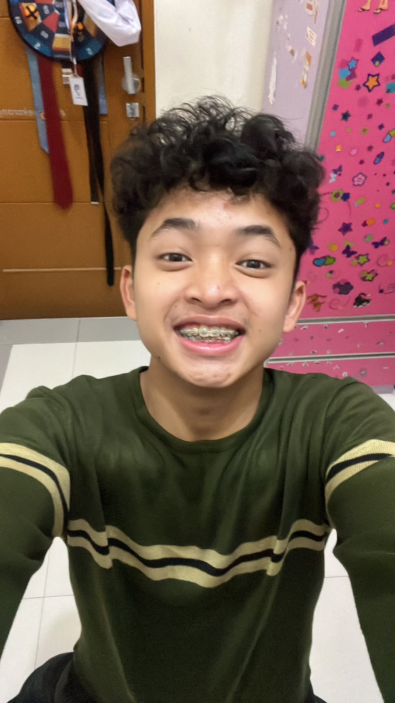
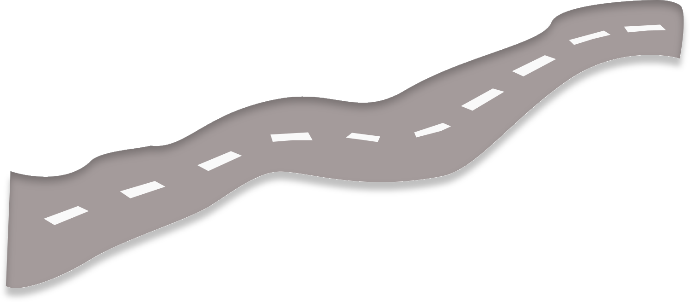
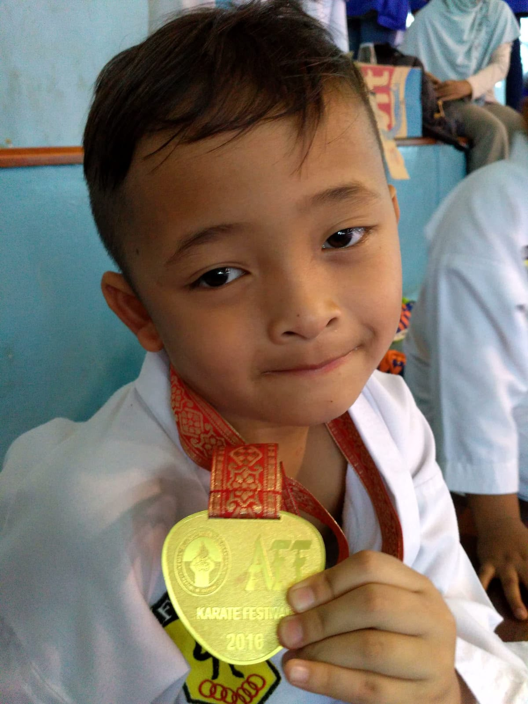
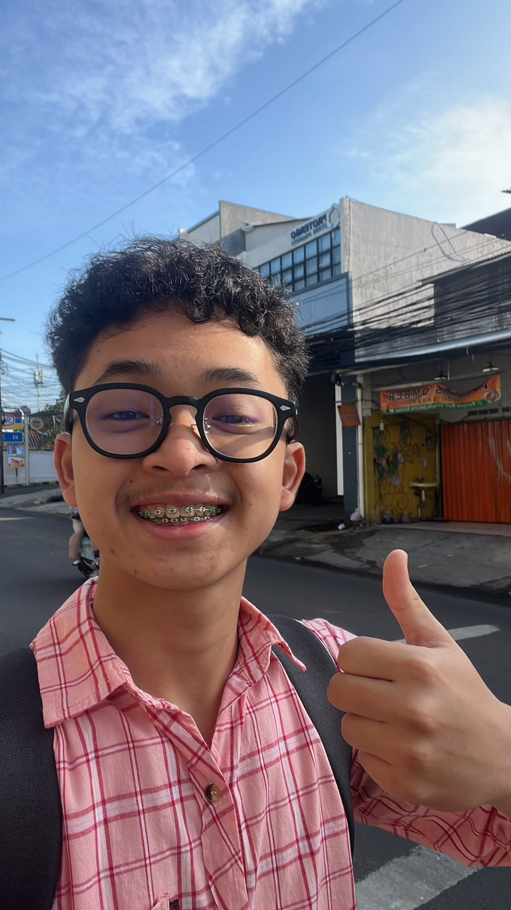
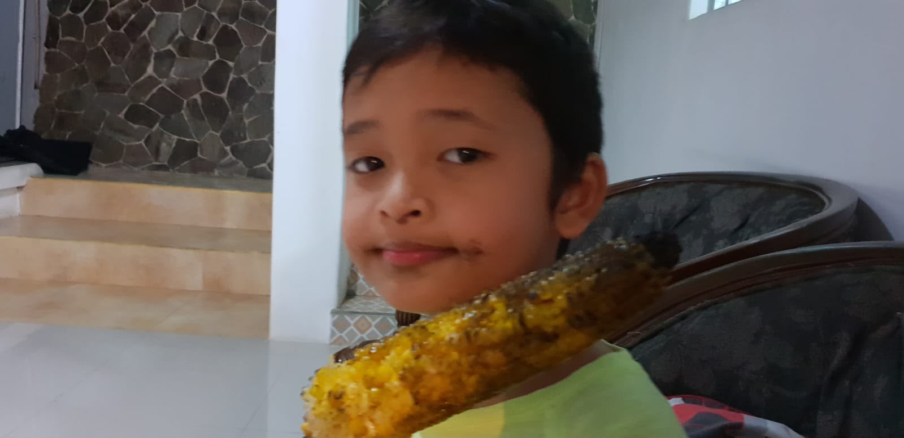
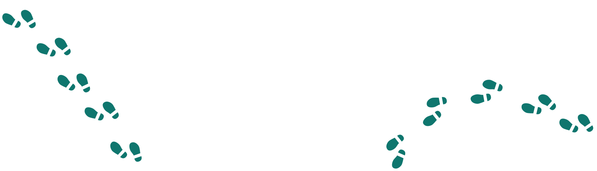

Elmaliq Safatoriq Akbar
Maliq
I believe that a good piece of work is not just about its appearance or function. What matters most is whether it respects the people who use it. That belief guides the way I learn, collaborate, and create.

Maliq

Each chapter introduces me some new knowledge, a broader perspective, and another reason to keep learning.
Back then, it was my first time starting school. It was the first place that taught me how to think, speak, and build my self-confidence
As I moved up to middle school, I began to explore my identity—from discovering my hobbies to figuring out my future path.
Moving up another level, I finally enrolled in a vocational school. I chose software engineering as my major. And from that point on, my interests, talents, and life path became even clearer—from my career plans to my life during college.



